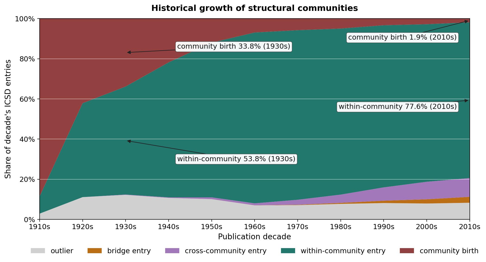
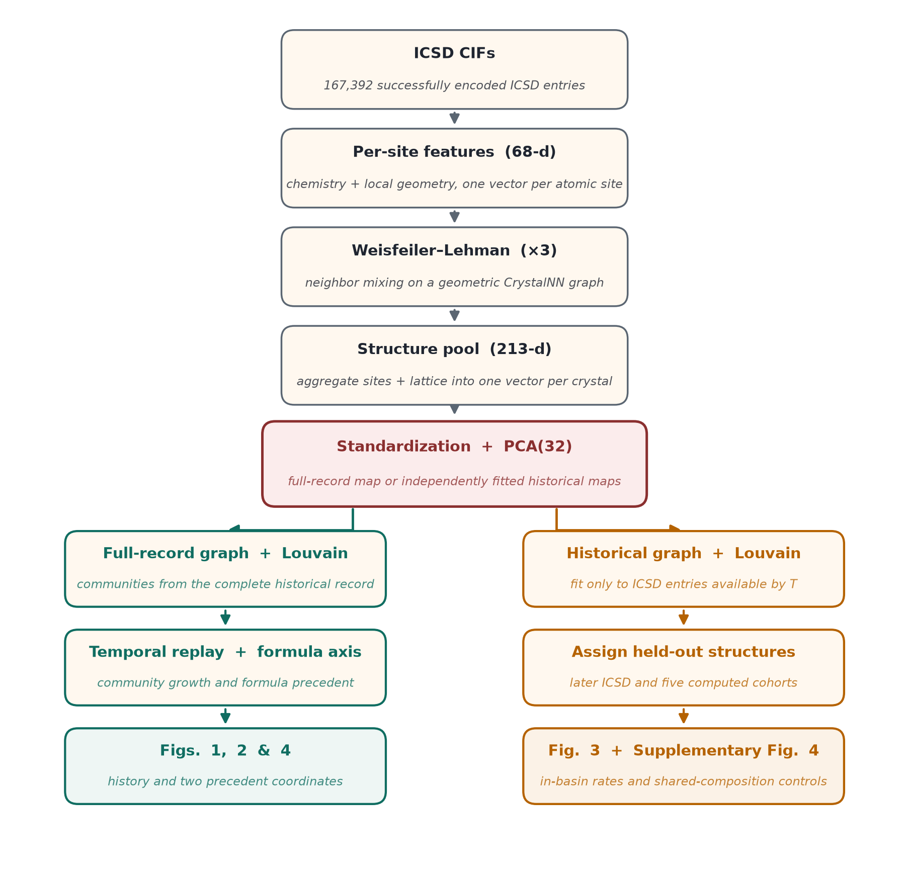
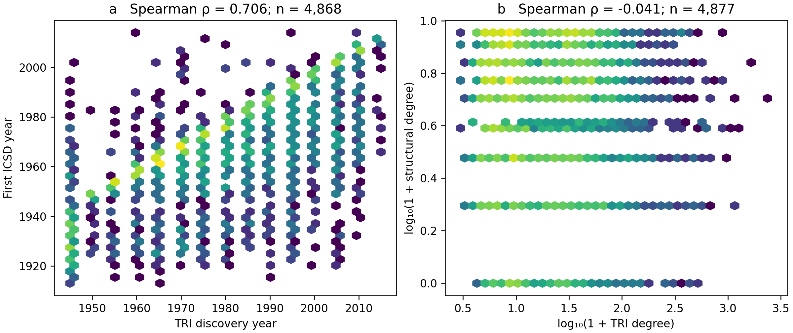
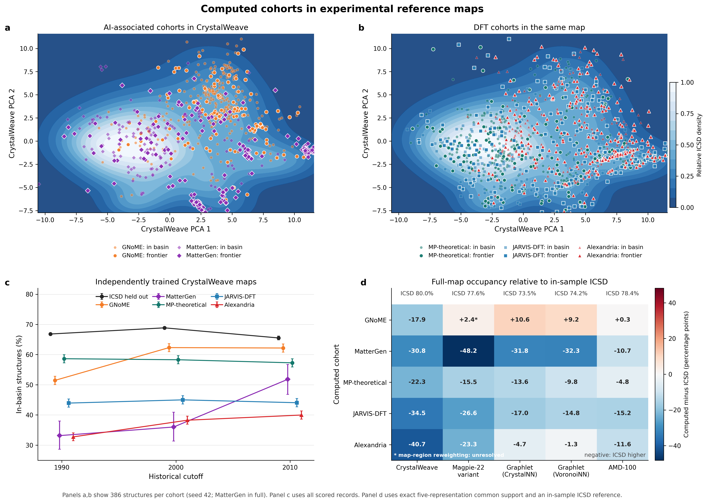
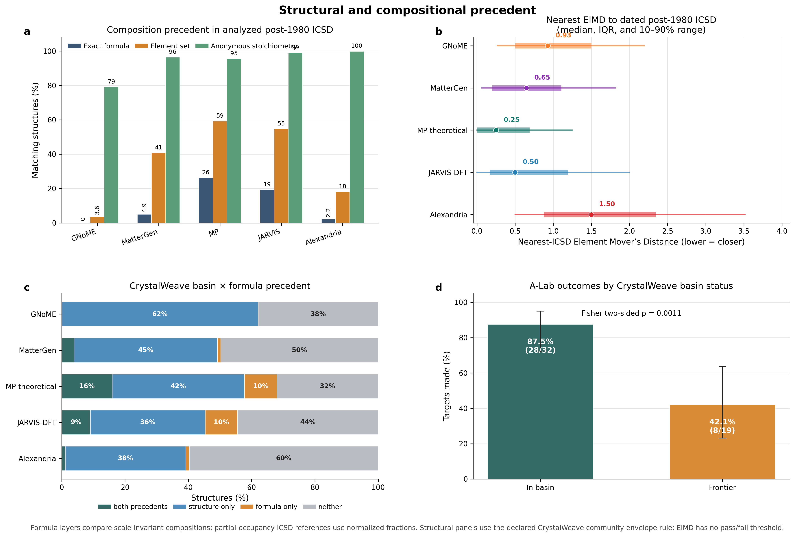

1. Structural Densification
The share of structures that open new communities declines through time, while assignment to preexisting basins comes to dominate the ICSD record.
Explore the repaired ICSD structural-history results: century-scale densification, structural and thermodynamic networks, and five public computed cohorts placed against the historical experimental record.
The map describes how the experimental record develops and provides a common structural reference for public computed cohorts.
The share of structures that open new communities declines through time, while assignment to preexisting basins comes to dominate the ICSD record.
TRI-shared formulas overwhelmingly enter existing structural communities. Structural proximity and reduced-formula precedent describe different aspects of the experimental record.
Held-out ICSD is more often in-basin than all five computed cohorts in historical CrystalWeave maps. Across representations, GNoME combines extensive compositional novelty with familiar local patterns: both Graphlet maps and the historical AMD maps place it within experimental neighborhoods more often.
These regenerated figures support the revised manuscript and supporting information. Open each figure to inspect it at full size.

New-community events decline while occupancy of existing basins rises through the ICSD record.

The repaired representation organizes structures into neighborhoods spanning multiple space groups. Community membership alone does not establish atomic-prototype identity.

TRI-linked formulas overwhelmingly enter established structural neighborhoods instead of founding new ones.

Held-out ICSD is more often in-basin at production settings. The ordering of computed cohorts changes with cutoff and partition.

Distance from the experimental map and prior observation of a reduced formula provide separate descriptions of a computed candidate.
The companion Dash application provides the interactive Community Map and CIF scorer when configured with the repaired reference bundle.
Launch the local Dash companion and select Community Map to inspect the repaired communities, checked descriptions, and central representatives.
In the Dash companion, upload a CIF to obtain its nearest-community distance, in-basin or frontier status, and historical accessibility cost. The default observation year is 2019.
Explore the regenerated comparisons accompanying the revised supplement.
{kind=link}
{kind=link}
{kind=link}
{kind=link}
{kind=link}
{kind=link}